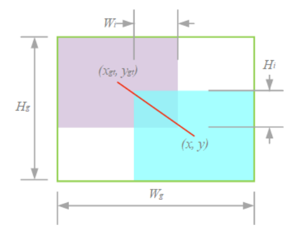
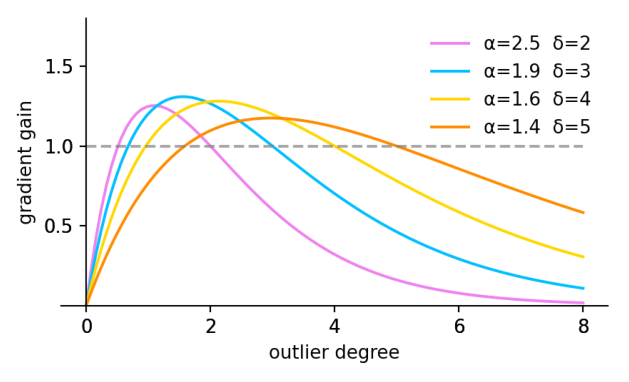
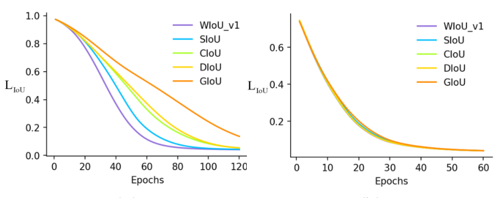
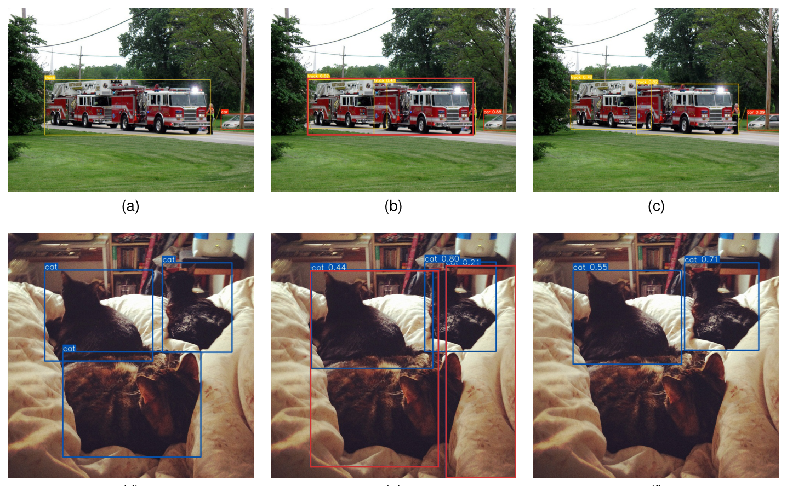
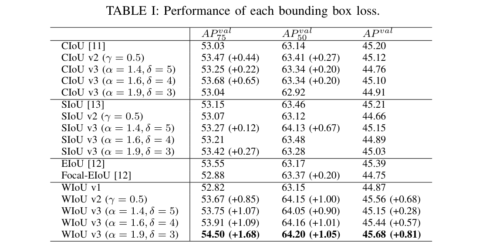

用离群度代替 IoU 评价锚框质量，使质量划分标准随训练状态动态更新，充分发掘非单调聚焦机制的潜力，有效抑制低质量样例的有害梯度。
距离注意力放大普通质量锚框的损失，高质量锚框的 LIoU 自动降低关注。
用 β = L*IoU / L̄IoU 代替 IoU 评价锚框质量，质量划分标准随训练动态更新。
同时压制 高质量与低质量锚框，聚焦普通质量样本。
WIoU v3 将 YOLOv7 在 MS-COCO 上的 AP75 从 53.03% 提升到 54.50%。
核心问题：如何 随训练状态动态评价锚框质量并合理分配梯度增益？
LWIoU v1 = RWIoU · LIoU
RWIoU = exp((d²) / (Wg² + Hg²)*)
RWIoU ∈ [1, e) 放大普通质量锚框的 LIoU；LIoU ∈ [0,1] 在吻合良好时降低高质量锚框的关注。Wg、Hg 从计算图分离（*），不引入阻碍收敛的梯度。

β = LIoU* / LIoU ∈ [0, +∞)
LWIoU v3 = r · LWIoU v1, r = β / (δ · αβ−δ)
β 小 = 高质量锚框，β 大 = 低质量锚框。当 β=δ 时 r=1 达最高梯度增益。高质量与低质量锚框同时获得小梯度增益，聚焦普通质量样本。




用离群度代替 IoU 评价锚框质量，质量划分标准随训练动态更新，设计视角新颖。
同时压制高/低质量锚框，为含噪标注下的检测训练提供可复用的样本加权范式。
仿真回归、聚焦机制消融、训练曲线与逐类别精度归因等多个维度相互印证。